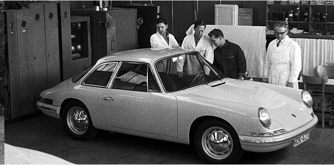
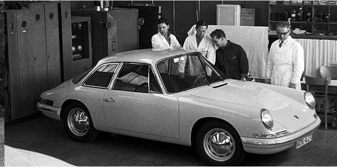

In post-war Germany, parts were generally in short supply, so the 356 automobile used components from the Volkswagen Beetle, including the engine case from its internal combustion engine, transmission, and several parts used in the suspension. The 356, however, had several evolutionary stages, A, B, and C, while in production, and most Volkswagen-sourced parts were replaced by Porsche-made parts. Beginning in 1954 the 356s engines started utilizing engine cases designed specifically for the 356. The sleek bodywork was designed by Erwin Komenda, who also had designed the body of the Beetle. Porsche's signature designs have, from the beginning, featured air-cooled rear-engine configurations (like the Beetle), rare for other car manufacturers, but producing automobiles that are very well balanced.

Porsche SE was created in June 2007 by renaming the old Dr. Ing. h.c. F. Porsche AG, and became a holding company for the families' stake in Porsche Zwischenholding GmbH (50.1%) (which in turn held 100% of the old Porsche AG) and Volkswagen AG (50.7%).[26][27] At the same time, the new Dr. Ing. h.c. F. Porsche AG (Porsche AG) was created for the car manufacturing business.